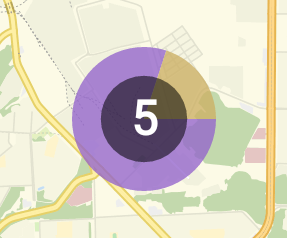

Sidorov Roman Сидоров Роман
If you're not having fun, you're not doing the right thing. Если вам не весело, вы занимаетесь не тем делом.
phone: +7 960 047-76-42
e-mail: sidorovroman92@gmail.com
Education Образование
 Kazan Federal University
Казанский государственный университет им. В.И. Ульянова-Ленина
Kazan Federal University
Казанский государственный университет им. В.И. Ульянова-Ленина
Mathematics and Computer Science
Прикладная математика и информатика
2010 - 2015
 Kazan Federal University
Казанский государственный университет им. В.И. Ульянова-Ленина
Kazan Federal University
Казанский государственный университет им. В.И. Ульянова-Ленина
Mathematical Methods in Economics
Математические методы в экономике
2010 - 2014
Languages Языки
- Russian
- English (intermediate)
- French (base)
- Русский
- Английский (Разговорный)
- Французский (Базовый)
Experience and major projects Опыт работы и основные проекты
Android Developer

"GradoService"
"ГрадоСервис"
january 2014 – present
январь 2014 – настоящее время
 Development android - application “Automap”, that implements client-side automonitoring system and geoinformation system “Automap”. The app is designed for managers, allows you to track the location and routes of vehicles, to monitor sensor indicators, to generate reports and to check the status and activity of drivers.
Разработка android - приложения “Automap”, реализующего клиентскую часть одноименной системы автомониторинга и геоинформационной системы “Automap”.Приложение созданно для руководителей, позволяющее отслеживать местоположение и маршруты своих транспортных средств, узнавать о показателях датчиков, строить отчеты и проверять статусы и активность водителей.
Development android - application “Automap”, that implements client-side automonitoring system and geoinformation system “Automap”. The app is designed for managers, allows you to track the location and routes of vehicles, to monitor sensor indicators, to generate reports and to check the status and activity of drivers.
Разработка android - приложения “Automap”, реализующего клиентскую часть одноименной системы автомониторинга и геоинформационной системы “Automap”.Приложение созданно для руководителей, позволяющее отслеживать местоположение и маршруты своих транспортных средств, узнавать о показателях датчиков, строить отчеты и проверять статусы и активность водителей.


 Development android - application “Automap Tasks". The app is designed for managers, that used "Automap". The app allows you to manage tasks of vehicles and to monitor their implementation.
Разработка android - приложения “Automap Задачи”. Создано для руководителей, пользующихся продуктом “Automap”. Приложение позволяет управлять задачами транспортных средств, контролировать их выполнение.
Development android - application “Automap Tasks". The app is designed for managers, that used "Automap". The app allows you to manage tasks of vehicles and to monitor their implementation.
Разработка android - приложения “Automap Задачи”. Создано для руководителей, пользующихся продуктом “Automap”. Приложение позволяет управлять задачами транспортных средств, контролировать их выполнение.
 Development android - application “Automap Driver. The app is designed for drivers of transport organizations, that used "Automap". The application serves as a navigator, that includes a list of tasks with a detailed description. With PUSH-notifications driver is always aware of the urgent tasks. The application also has a specially designed service for sending position data and current indicators of android-device.
Разработка android - приложения “Automap Водитель”. Создано для водителей транспортных организаций, пользующихся продуктом “Automap”.Приложение выполняет роль полноценного навигатора, включающего список задач с детальным описанием. С помощью PUSH-уведомлений водитель всегда остается в курсе актуальных задач. Также приложение имеет специально разработанный сервис по отправке данных местоположения и текущих показателей android-устройства.
Development android - application “Automap Driver. The app is designed for drivers of transport organizations, that used "Automap". The application serves as a navigator, that includes a list of tasks with a detailed description. With PUSH-notifications driver is always aware of the urgent tasks. The application also has a specially designed service for sending position data and current indicators of android-device.
Разработка android - приложения “Automap Водитель”. Создано для водителей транспортных организаций, пользующихся продуктом “Automap”.Приложение выполняет роль полноценного навигатора, включающего список задач с детальным описанием. С помощью PUSH-уведомлений водитель всегда остается в курсе актуальных задач. Также приложение имеет специально разработанный сервис по отправке данных местоположения и текущих показателей android-устройства.
Development of service that sending data by protobuf protocol Разработка сервиса отправки данных для android-устройств по средствам protobuf протокола.
Development of authorization modules through social network for system https://geo4.me/ Разработка модулей авторизации через социальные сети для системы https://geo4.me/
 Addition of clustering to geoinformation library Osmbonuspack Добавление кластеризации в геоинформационную библиотеку Osmbonuspack
Specialized skills Cпециализированные навыки
- Java, Android SDK, NDK, WebSocket (Autobahn.ws , Weberknecht), protobuf, Maps.me engine, Gradle , Maven, Osmdroid, Osmbonuspack, AndroidAnnotatios, Retrofit, Okhttp, Picasso, Achartengine, Gson
- Logging errors with systems Airbrake & Fabric.io (Crashlytics)
- Android Studio, Eclipse
- GIT (Source Tree)
Web Application Developer
GradoService"
"ГрадоСервис"
august 2012 – january 2014
август 2012 – январь 2014
 Development of automonitoring system and geoinformation system "Automap"
Разработка системы автомониторинга и геоинформационной системы "Automap"
Development of automonitoring system and geoinformation system "Automap"
Разработка системы автомониторинга и геоинформационной системы "Automap"
 Development of administration system for "Automap"
Разработка системы администрирования "Automap"
Development of administration system for "Automap"
Разработка системы администрирования "Automap"
Specialized skills Cпециализированные навыки
- JavaScript, jQuery, Backbone.js, underscore.js, Bootstrap, Angular,WebSocket, LESS, CSS, HTML, require.js
- IntelliJ IDEA
- GIT (bash)
Additional experience Дополнительный опыт
 Development of client-side web applications social network
Разработка клиентской части веб-приложения социальной сети
Development of client-side web applications social network
Разработка клиентской части веб-приложения социальной сети
 Website development
Разработка сайта
http://sky-park.club/
Website development
Разработка сайта
http://sky-park.club/
Courses Курсы
- Programming Mobile Applications for Android Handheld Systems Part 1 & Part 2
- Android Performance
- Google Location Services on Android
- Gradle for Android and Java
Certificates Сертификаты
Certificate of completion of online schools android-developers Google & e-Legion http://learndroid.e-legion.ru/certificates/9ab8309ac1485077872fd51d6b2da056.pdf